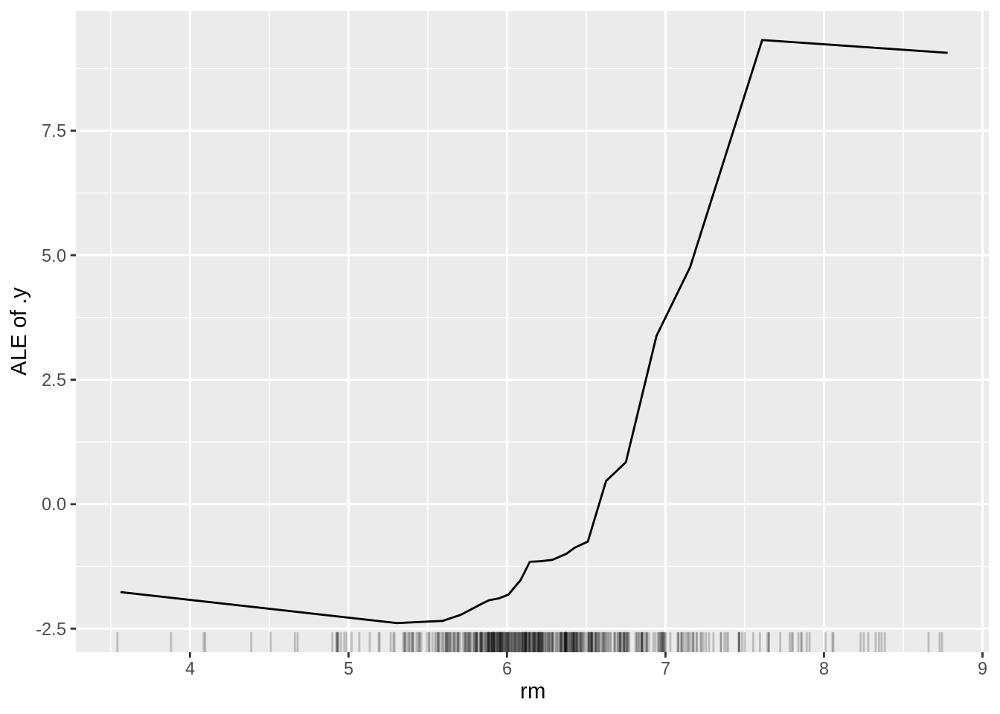
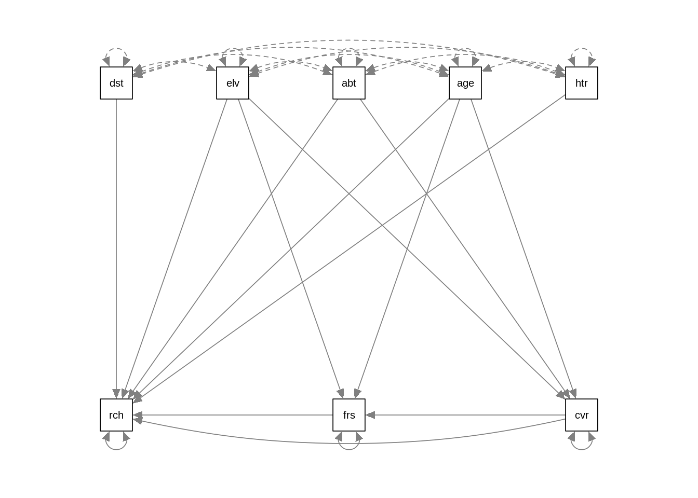

5 Interpretation and causality with machine learning
5.1 Explainable AI
The goal of explainable AI (xAI, aka interpretable machine learning) is to explain WHY a fitted ML models makes certain predictions. A typical example is to understand how important different variables are for predictions. There incentives to do so range from a better technical understanding of the models over understanding which data is important to improve predictions to questions of fairness and discrimination (e.g. to understand if an algorithm uses skin color to make a decision).
5.1.1 A practical example
In this lecture we will work with another famous dataset, the Boston housing dataset:
We will fit a random forest and use the iml pkg for xAI, see
set.seed(123)
library("iml")
library("randomForest")
data("Boston", package = "MASS")
rf = randomForest(medv ~ ., data = Boston, ntree = 50)xAI packages are written generic, i.e. they can handle almost all ML models. When we want to use them, we first have to create a Predictor object, that holds the model and the data. The iml package uses R6 classes, that means new objects can be created by calling Predictor$new(). (do not worry if you do not know what R6 classes are, just use the command)
X = Boston[which(names(Boston) != "medv")]
predictor = Predictor$new(rf, data = X, y = Boston$medv)5.1.2 Feature Importance
Feature importance, should not be mistaken with the RF variable importance. It tells us how important the individual variables are for predictions and can be calculated for all ML models and is based on a permutation approach (have a look at the book):
imp = FeatureImp$new(predictor, loss = "mae")
plot(imp)
5.1.3 Partial dependencies
Partial dependencies are similar to allEffects plots for normal regressions, the idea is to visualize “marginal effects” of predictors (with the feature argument we specify the variable we want to visualize):
eff = FeatureEffect$new(predictor, feature = "rm", method = "pdp", grid.size = 30)
plot(eff)
Partial dependencies can be also plotted for single observations:
eff = FeatureEffect$new(predictor, feature = "rm", method = "pdp+ice", grid.size = 30)
plot(eff)
One disadvantage of partial dependencies is that they are sensitive to correlated predictors. Accumulated local effects can be used to account for correlation for predictors
5.1.4 Accumulated local effects
Accumulated local effects (ALE) are basically partial dependencies plots but try to correct for correlations between predictors
ale = FeatureEffect$new(predictor, feature = "rm", method = "ale")
ale$plot()
If there is no colinearity, you shouldn’t see much difference between partial dependencies and ALE plots.
5.1.5 Friedmans H-statistic
The H-statistic can be used to find interactions between predictors. However, again, keep in mind that the H-statistic is sensible to correlation between predictors:
interact = Interaction$new(predictor, "lstat")
plot(interact)
5.1.6 Global explainer - Simplifying the ML model
Another idea is to simplify the ML model with another simpler model such as a decision tree. We create predictions with the ML model for a lot of different input values and then we fit on these predictions a decision tree, which we can then interpret.
library(partykit)## Loading required package: libcoin## Loading required package: mvtnorm##
## Attaching package: 'mvtnorm'## The following object is masked from 'package:mclust':
##
## dmvnorm##
## Attaching package: 'partykit'## The following object is masked from 'package:BiocGenerics':
##
## widthtree = TreeSurrogate$new(predictor, maxdepth = 2)
plot(tree)
5.1.7 Local explainer - LIME explaining single instances (observations)
The global approach is to simplify the entire ML-black-box model via a simpler model, which is then interpretable.
However, sometimes we are only interested in understanding how single observations/predictions are generated. The lime approach explores the feature space around one observations and based on this local spare fits then a simpler model (e.g. a linear model):
library(glmnet)## Loaded glmnet 4.1-1lime.explain = LocalModel$new(predictor, x.interest = X[1,])## Loading required package: gowerlime.explain$results## beta x.recoded effect x.original feature feature.value
## rm 4.1893817 6.575 27.545185 6.575 rm rm=6.575
## ptratio -0.5307031 15.300 -8.119758 15.3 ptratio ptratio=15.3
## lstat -0.4398104 4.980 -2.190256 4.98 lstat lstat=4.98plot(lime.explain)5.1.8 Local explainer - Shapley
The Shapley method computes the so called Shapley value, feature contributions for single predictions, and is based on an approach from cooperative game theory. The idea is that each feature value of the instance is a “player” in a game, where the prediction is the reward. The Shapley value tells us how to fairly distribute the award among the feature.
shapley = Shapley$new(predictor, x.interest = X[1,])
shapley$plot()
5.2 Causal inference and machine learning
xAI aims at explaining how predictions are being made. In general, xAI != causality. xAI methods measure which variables are used by the algorithm for predictions, or how much variables improve predictions. The important point to note here: if a variable causes something, we could also expect that it helps to predict the very thing. The opposite, however, is not generally true - it is very often possible that a variable that doesn’t cause something can predict something.
In statistical courses (in particular course: advanced biostatistics), we discuss the issue of causality at length. Here, we don’t want to go into the details, but again, you should in general resist to interpret indicators of importance in xAI as causal effects. They tell you something about what’s going on in the algorithm, not about what’s going on in reality.
5.2.1 Causal inference on static data
Methods for causal inference depend on whether we have dynamic or static data. The latter is the more common case. With static data, the problem is confounding - if you have several predictors that are correlated, you can get spurious correlations between a given predictor and the response, although there are no in general.
A multiple regression, and a few other methods are able to correct for other predictors, and thus isolate the causal effect. The same is not necessarily true for ML algorithms and xAI methods. This is not a bug, but a feature - for making good predictions, it is often no problem, but rather an advantage to also use non-causal predictors.
Here an example for the variable importance indicators in the RF algorithm. The purpose of this script is to show that RF variable importance will split importance values for collinear variables evenly, even if collinearity is low enough so that variables are separable and would be correctly separated by an lm / ANOVA
We first simulate a dataset with 2 predictors that are strongly correlated, but only one of them has an effect on the response.
# simulation parameters
n = 1000
col = 0.7
# create collinear predictors
x1 = runif(n)
x2 = col * x1 + (1-col) * runif(n)
# response is only influenced by x1
y = x1 + rnorm(n)lm / anova correctly identify x1 as causal variable
anova(lm(y ~ x1 + x2))## Analysis of Variance Table
##
## Response: y
## Df Sum Sq Mean Sq F value Pr(>F)
## x1 1 106.30 106.300 110.1988 <2e-16 ***
## x2 1 0.23 0.228 0.2368 0.6267
## Residuals 997 961.73 0.965
## ---
## Signif. codes: 0 '***' 0.001 '**' 0.01 '*' 0.05 '.' 0.1 ' ' 1Fit RF and show variable importance
fit <- randomForest(y ~ x1 + x2, importance=TRUE)
varImpPlot(fit)Variable importance is now split nearly evenly.
Task: understand why this is - remember:
- How the random forest works - variables are randomly hidden from the regression tree when the trees for the forest are built
- Remember that as x1 ~ x2, we can use x2 as a replacement for x1
- Remember that the variable importance measures the average contributions of the different variables in the trees of the forest
5.2.2 Structural equation models
If causal relationships get more complicated, it will not be possible to adjust correctly with a simple lm. In this case, in statistics, we will usually use structural equation models (SEMs). SEMs are designed to estimate entire causal diagrams. There are two main SEM packages in R: for anything that is non-normal, you will currently have to estimate the DAG piece-wise with CRAN package piecewiseSEM. Example for a vegetation dataset:
library(piecewiseSEM)## Registered S3 methods overwritten by 'lme4':
## method from
## cooks.distance.influence.merMod car
## influence.merMod car
## dfbeta.influence.merMod car
## dfbetas.influence.merMod car##
## This is piecewiseSEM version 2.0.2
##
## If you have used the package before, it is strongly recommended you read Section 3 of the vignette('piecewiseSEM') to familiarize yourself with the new syntax
##
## Questions or bugs can be addressed to <jlefcheck@bigelow.org>mod = psem(
lm(rich ~ distance + elev + abiotic + age + hetero + firesev + cover, data = keeley),
lm(firesev ~ elev + age + cover, data = keeley),
lm(cover ~ age + elev + hetero + abiotic, data = keeley)
)
summary(mod)##
|
| | 0%
|
|=================================== | 25%
|
|====================================================================== | 50%
|
|========================================================================================================== | 75%
|
|=============================================================================================================================================| 100%##
## Structural Equation Model of mod
##
## Call:
## rich ~ distance + elev + abiotic + age + hetero + firesev + cover
## firesev ~ elev + age + cover
## cover ~ age + elev + hetero + abiotic
##
## AIC BIC
## 46.543 96.539
##
## ---
## Tests of directed separation:
##
## Independ.Claim Estimate Std.Error DF Crit.Value P.Value
## cover ~ distance + ... 0.0021 0.0050 84 0.4201 0.6755
## firesev ~ distance + ... -0.0194 0.0234 85 -0.8264 0.4109
## firesev ~ abiotic + ... -0.0245 0.0208 85 -1.1799 0.2413
## firesev ~ hetero + ... -0.8093 1.4061 85 -0.5755 0.5665
##
## Global goodness-of-fit:
##
## Fisher's C = 6.543 with P-value = 0.587 and on 8 degrees of freedom
##
## ---
## Coefficients:
##
## Response Predictor Estimate Std.Error DF Crit.Value P.Value Std.Estimate
## rich distance 0.6157 0.1855 82 3.3195 0.0013 0.3599 **
## rich elev -0.0092 0.0059 82 -1.5663 0.1211 -0.1569
## rich abiotic 0.4881 0.1641 82 2.9741 0.0039 0.2482 **
## rich age 0.0241 0.1097 82 0.2199 0.8265 0.0201
## rich hetero 44.4135 10.8093 82 4.1088 0.0001 0.3376 ***
## rich firesev -1.0181 0.8031 82 -1.2677 0.2085 -0.1114
## rich cover 12.3998 4.2206 82 2.9379 0.0043 0.2604 **
## firesev elev -0.0006 0.0006 86 -0.9298 0.3551 -0.0874
## firesev age 0.0473 0.0129 86 3.6722 0.0004 0.3597 ***
## firesev cover -1.5214 0.5204 86 -2.9236 0.0044 -0.2921 **
## cover age -0.0101 0.0024 85 -4.1757 0.0001 -0.3991 ***
## cover elev 0.0004 0.0001 85 2.9688 0.0039 0.2999 **
## cover hetero -0.7875 0.2719 85 -2.8960 0.0048 -0.2850 **
## cover abiotic 0.0021 0.0042 85 0.4855 0.6286 0.0498
##
## Signif. codes: 0 '***' 0.001 '**' 0.01 '*' 0.05
##
## Individual R-squared:
##
## Response method R.squared
## rich none 0.57
## firesev none 0.30
## cover none 0.26# plot(mod)For linear SEMs, we can estimate the entire DAG in one go. This also allows to have unobserved variables in the DAG. One of the most popular packages for this is lavaan
library(lavaan)## This is lavaan 0.6-8
## lavaan is FREE software! Please report any bugs.mod <- "
rich ~ distance + elev + abiotic + age + hetero + firesev + cover
firesev ~ elev + age + cover
cover ~ age + elev + abiotic
"
fit<-sem(mod,data=keeley)## Warning in lav_data_full(data = data, group = group, cluster = cluster, : lavaan WARNING: some observed variances are (at least) a factor 1000 times
## larger than others; use varTable(fit) to investigatesummary(fit)## lavaan 0.6-8 ended normally after 77 iterations
##
## Estimator ML
## Optimization method NLMINB
## Number of model parameters 16
##
## Number of observations 90
##
## Model Test User Model:
##
## Test statistic 10.437
## Degrees of freedom 5
## P-value (Chi-square) 0.064
##
## Parameter Estimates:
##
## Standard errors Standard
## Information Expected
## Information saturated (h1) model Structured
##
## Regressions:
## Estimate Std.Err z-value P(>|z|)
## rich ~
## distance 0.616 0.177 3.485 0.000
## elev -0.009 0.006 -1.644 0.100
## abiotic 0.488 0.156 3.134 0.002
## age 0.024 0.105 0.229 0.819
## hetero 44.414 9.831 4.517 0.000
## firesev -1.018 0.759 -1.341 0.180
## cover 12.400 3.841 3.228 0.001
## firesev ~
## elev -0.001 0.001 -0.951 0.342
## age 0.047 0.013 3.757 0.000
## cover -1.521 0.509 -2.991 0.003
## cover ~
## age -0.009 0.002 -3.875 0.000
## elev 0.000 0.000 2.520 0.012
## abiotic -0.000 0.004 -0.115 0.909
##
## Variances:
## Estimate Std.Err z-value P(>|z|)
## .rich 97.844 14.586 6.708 0.000
## .firesev 1.887 0.281 6.708 0.000
## .cover 0.081 0.012 6.708 0.000The default Plot options are not so nice as before
# devtools::install_version("lavaanPlot", version = "0.6.0")
library(lavaanPlot)
lavaanPlot(model = fit)Another plotting option is to use semPlot
library(semPlot)
semPaths(fit)
5.2.3 Automatic causal discovery
But how to get the causal graph? In statistics, it is common to “guess” it and afterwards do residual checks, in the same way as we guess the structure of a regression. For more complicated problems, however, this is unsatisfying. Some groups therefore work on so-called causal discovery algorithms, i.e. algorithms that automatically generate causal graphs from data. One of the most classic algorithms of this sort is the PC algorithm. Here an example using the pcalg package:
# Bioconductor dependencies have to installed by hand, e.g.
# BiocManager::install(c("Rgraphviz", "graph", "RBGL")
library(pcalg)Loading the data
data("gmG", package = "pcalg") ## loads data sets gmG and gmG8
suffStat <- list(C = cor(gmG8$x), n = nrow(gmG8$x))
varNames <- gmG8$g@nodesFirst, the skeleton algorithm creates a basic graph without connections (a skeleton of the graph)
skel.gmG8 <- skeleton(suffStat, indepTest = gaussCItest,
labels = varNames, alpha = 0.01)
Rgraphviz::plot(skel.gmG8)
What is missing here is the direction of the errors. The PC algorithm now makes tests for conditional independence, which allows fixing a part (but typically not all) of the directions of the causal arrows.
pc.gmG8 <- pc(suffStat, indepTest = gaussCItest,
labels = varNames, alpha = 0.01)
Rgraphviz::plot(pc.gmG8 )5.2.4 Causal inference on dynamic data
When working with dynamic data, we can use an additional piece of information - the effect usually precedes the cause, which means that we can test for a time-lag between cause and effect to determine the direction of causality. This way of testing for causality is known as Granger causality, or Granger methods. Here an example:
library(lmtest)## Loading required package: zoo##
## Attaching package: 'zoo'## The following objects are masked from 'package:base':
##
## as.Date, as.Date.numeric##
## Attaching package: 'lmtest'## The following object is masked from 'package:crayon':
##
## reset## Which came first: the chicken or the egg?
data(ChickEgg)
grangertest(egg ~ chicken, order = 3, data = ChickEgg)## Granger causality test
##
## Model 1: egg ~ Lags(egg, 1:3) + Lags(chicken, 1:3)
## Model 2: egg ~ Lags(egg, 1:3)
## Res.Df Df F Pr(>F)
## 1 44
## 2 47 -3 0.5916 0.6238grangertest(chicken ~ egg, order = 3, data = ChickEgg)## Granger causality test
##
## Model 1: chicken ~ Lags(chicken, 1:3) + Lags(egg, 1:3)
## Model 2: chicken ~ Lags(chicken, 1:3)
## Res.Df Df F Pr(>F)
## 1 44
## 2 47 -3 5.405 0.002966 **
## ---
## Signif. codes: 0 '***' 0.001 '**' 0.01 '*' 0.05 '.' 0.1 ' ' 15.2.5 Outlook for machine learning
As we have seen, there are already a few methods / algorithms to discover causality from large data, but the systematic transfer of these concepts to machine learning, in particular deep learning, is still at its infancy. At the moment, this field is actively researched and changes extremely fast, so we recommend to use google to see what is currently going on. Particular, in business and industry, there is a large interest in learning about causal effect from large datasets. In our opinion, a great topic for young scientists to specialize on.